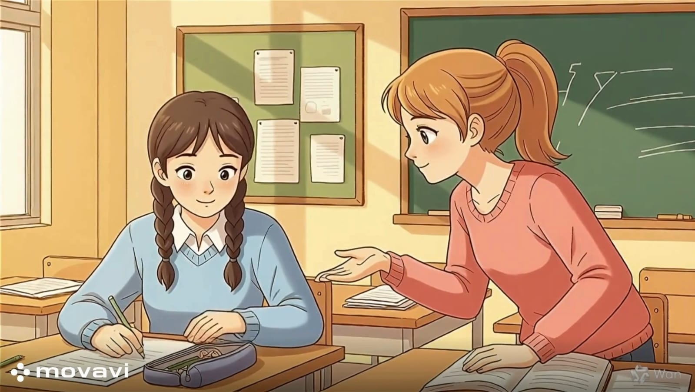

المواســاة
بعد الانتهاء من تدريس هذا الدرس يفترض أن يكون التلميذ قادرًا على:
أن يُعرف مفهوم المواساة.
أن يُميز بين الأثر النفسي للكلمة الطيبة وأثر السخرية أو اللوم في وقت الحزن.
أن يُطبق عبارات التعاطف الصحيحة مثل "أنا أشعر بك" و "أنا بجانبك" في المواقف الحياتية.

نشاط (1): مواساة زميل خسر في مسابقة
الموقف:
: شارك صديقك في مسابقة القراءة باللغة العربية، لكنه لم يفز بالمركز الأول، ورأيته يجلس حزينًا في ركن الفناء
1. ما هي أول خطوة تقوم بها؟ (هل تتركه وحده أم تذهب للجلوس بجانبه؟).
2. اقترح عبارات مشجعة لمواساته.
نشاط (2): مواساة زميل مريض أو مصاب
الموقف :
سقط زميلك في الملعب وأُصيب بجرح بسيط في ركبته وبدأ بالبكاء
1. ماذا تفعل لتهدئة روعه قبل وصول المعلم؟
2. اختر التصرف الأنسب لمواساته:
- تضحك عليه وتخبره أنه ضعيف.
- تمسك يده وتقول له: "اصبر يا بطل، ستكون بخير قريباً".
3. كيف تكون ملامح وجهك وأنت تواسيه؟ (حزينة وهادئة أم مبتسمة بشدة؟).
نشاط (3): مواساة من فقد شيئاً عزيزًا
الموقف :
: زميلتك في الفصل تبكي لأن قطتها الصغيرة ضاعت منها بالأمس.
1. ما هي "كلمات المواساة" التي يمكن أن تخفف عنها؟
2. هل يمكنك تقديم مساعدة عملية؟
3. كيف تظهر لزميلتك أنك تسمعها باهتمام؟b